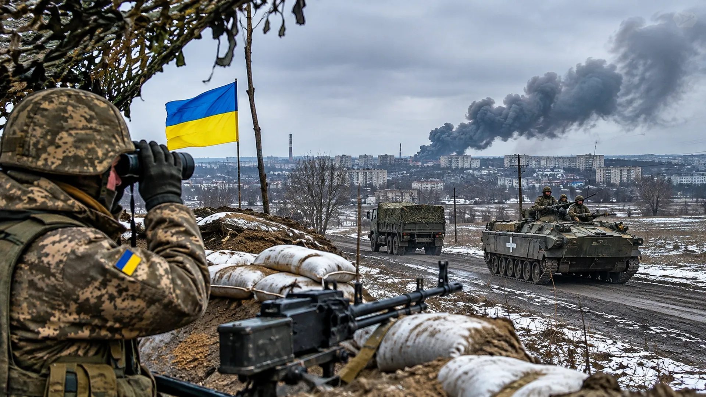

RUSSIA STRIKES UKRAINIAN POWER GRID
New Russian attacks on energy facilities raise the stakes for Ukraine as winter approaches.

The war in Ukraine is once again being fought through the electrical grid. As temperatures fall, Russia's missile and drone campaign threatens not only military operations but the ordinary machinery of civilian survival.
Russia launched a major wave of attacks overnight November 6–7. The Institute for the Study of War reported 36 ballistic missiles directed against Kyiv and continued strikes against energy infrastructure. Russian officials said they targeted military-industrial and transportation facilities; Ukrainian accounts described widespread damage and disruption.
Power is not simply a convenience. Hospitals depend on it. Water pumping and sewage systems depend on it. Railway signaling, telecommunications and industrial production depend on it. Repeated strikes force engineers to repair the same vulnerable network while air-defense crews try to stop the next barrage.
The Northern Bridge in Kyiv was among the locations reported damaged. Russia described transportation targets as connected to Ukraine's war effort, but damage to transport infrastructure also affects civilian movement and commerce. The line between military logistics and civilian necessity becomes especially consequential when bridges and substations serve both.
Ukraine has answered with strikes inside Russia, including another attack on the Saratov oil refinery reported by ISW. This is a campaign of attrition against the systems that keep each side fighting: fuel, power, manufacturing and movement. Neither country can easily shield every valuable target.
With talks approaching, the attacks pose a brutal question: is the violence intended to improve negotiating leverage, or does it demonstrate how far the parties remain from compromise? Whatever the diplomatic answer, Ukrainian households face the immediate reality of another winter under threat.
Sources and further reading: Reporting and source material